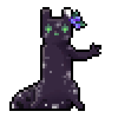

Nine

MBTI: ENFP-A (The Campaigner)
Enneagram: Type 7 - The Enthusiast
Zodiac: Pisces
Alignment: Rebel Neutral (5x5), Chaotic Neutral (3x3)
MBTI: ENFP-A (The Campaigner)
Enneagram: Type 7 - The Enthusiast
Zodiac: Pisces
Alignment: Rebel Neutral (5x5), Chaotic Neutral (3x3)

General Information:
Nickname(s) / Alias(es): The Explorer
Gender: non-binary [AFAB]
Pronouns: they/she/he
Age: Young
Species: Slugcat / Scug
Birthday: February 26th
-+-+-
Physical Appearance:
Nine is a slugcat whose base color is dark purple with french gray spots and hunter green eyes and nose. The other colors on their body are space cadet and english violet.
Basic Personality:
Nine would be described as a very friendly scug. They are quite excited to be in town despite only being here as a place to stay temporarily. She is quite curious and also has trouble making decisions (usually she goes with whatever others are doing) and seems pretty chill and laid-back. Though he can be nosy and pokes into things they shouldn't sometimes, and can be quite the procrastinator too.
Nine was featured in Round 3, where they were a Medusa. They claimed Veteran and got counterclaimed. L